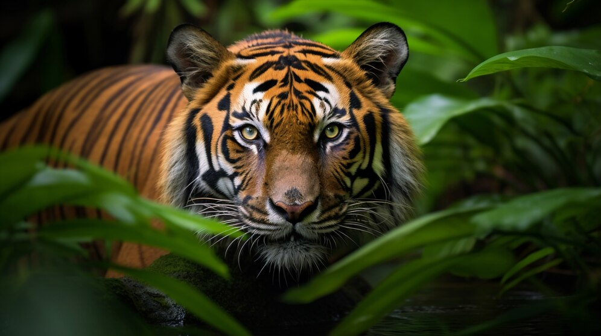
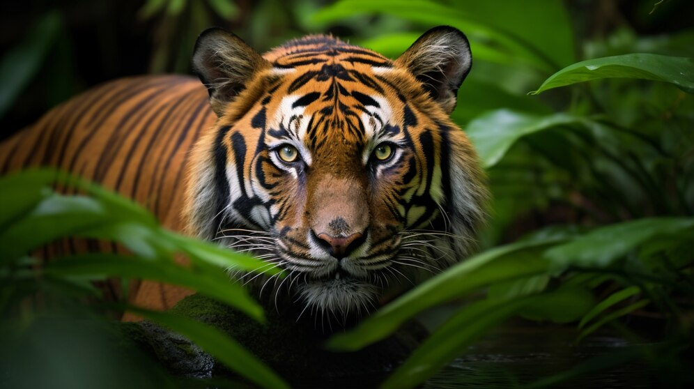
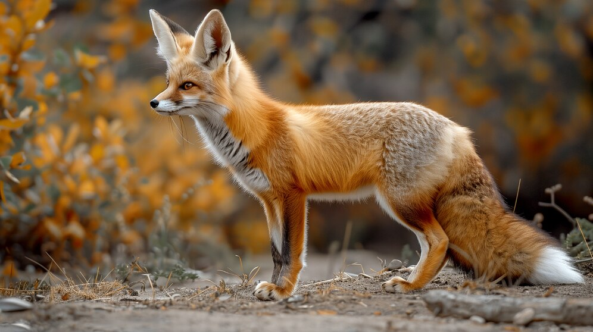
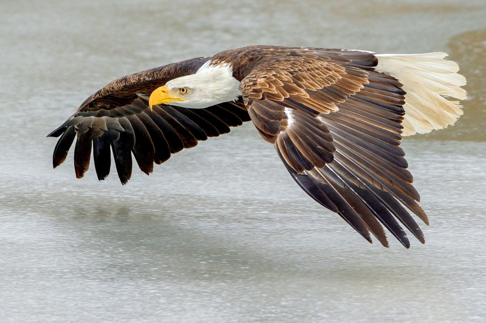
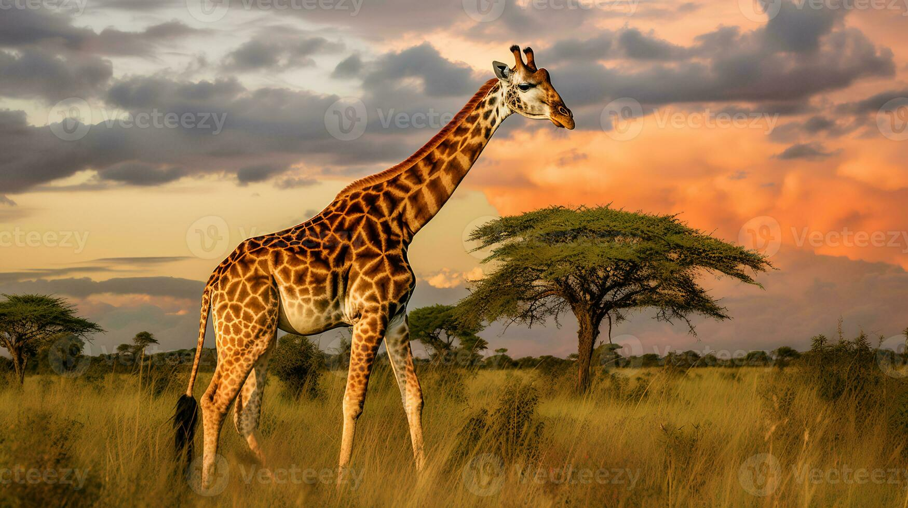
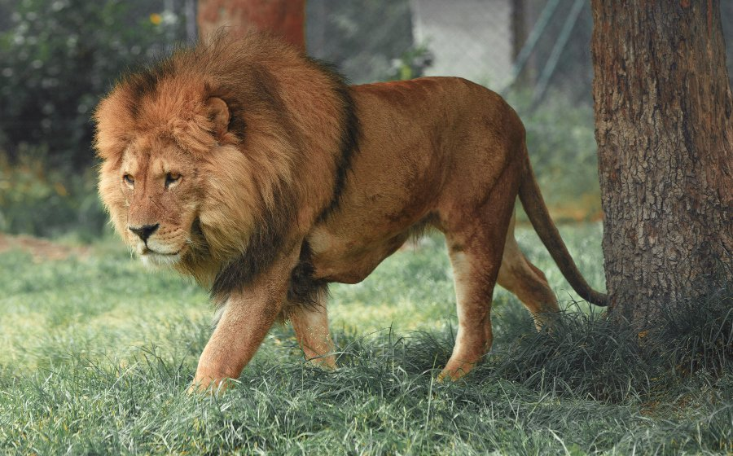
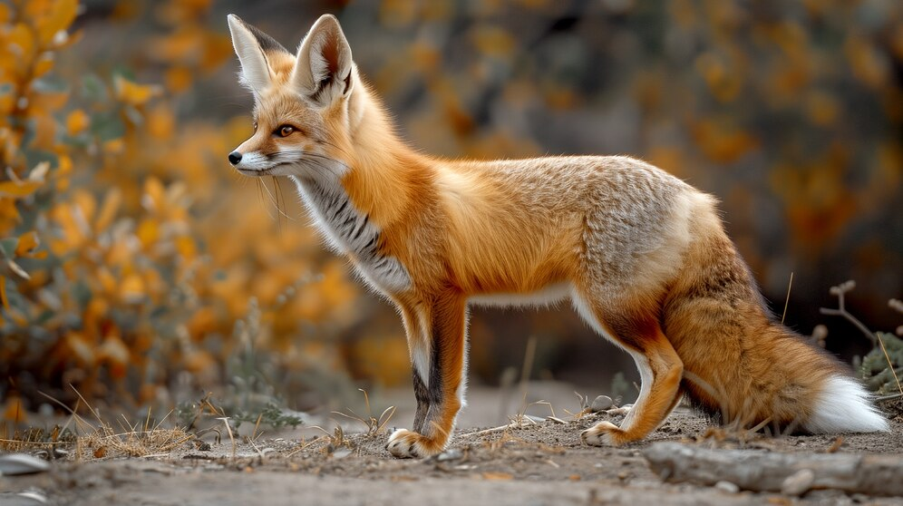
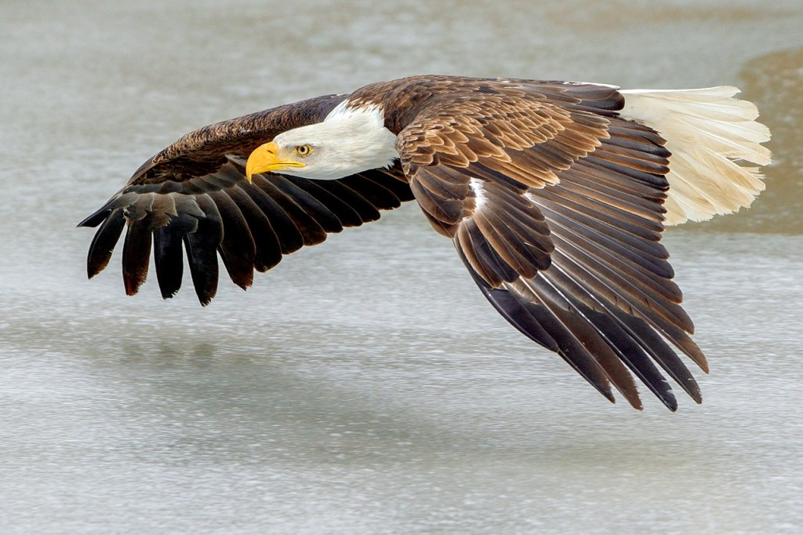
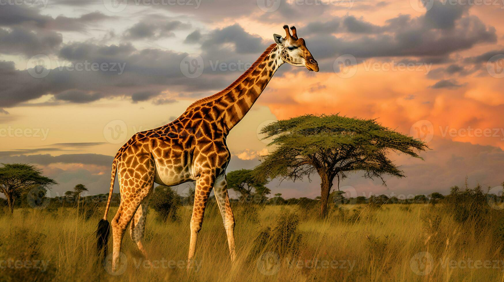
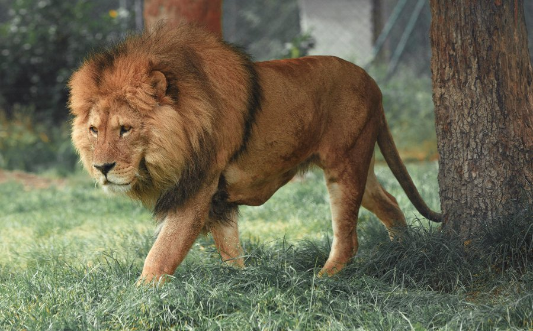

Minha Página de Aprendizado.


.jpg) 

 







Natureza
A natureza é a soma total de tudo que existe no mundo natural—incluindo os seres vivos, como plantas, animais e microrganismos, e os elementos inanimados, como montanhas, rios, oceanos, desertos e a atmosfera. É um sistema complexo e interconectado que funciona de maneira harmoniosa, onde cada parte desempenha um papel crucial no equilíbrio do todo.
Onça-Parda
O puma (Puma concolor), também conhecido como leão-da-montanha, é um grande felino nativo das Américas. Ele possui uma ampla distribuição, que vai desde o Canadá até a Patagônia. Apesar de sua ampla distribuição, o puma é um animal solitário e territorial. Ele é um predador ágil, capaz de caçar presas que variam em tamanho, desde pequenos roedores até grandes ungulados. Sua pelagem é uniforme, variando de um marrom-claro a um cinza-amarelado, o que o ajuda a se camuflar em seu habitat natural.
Polvo
O polvo é um molusco marinho pertencente à classe Cephalopoda. Conhecido por sua inteligência, o polvo possui um corpo mole, com oito tentáculos equipados com ventosas. Ele é capaz de realizar tarefas complexas, como abrir frascos e escapar de confinamentos, o que evidencia seu alto nível de cognição. Além disso, os polvos têm a capacidade de mudar de cor e textura, usando células especiais chamadas cromatóforos, para se camuflar ou comunicar. Eles habitam os oceanos de todo o mundo e são conhecidos por sua capacidade de regenerar membros perdidos.
Tigre
O tigre (Panthera tigris) é o maior felino do mundo e é encontrado principalmente na Ásia. Com sua pelagem laranja-avermelhada com listras pretas, o tigre é facilmente reconhecível e é um símbolo de poder e força. Existem várias subespécies de tigre, incluindo o tigre-de-bengala, o tigre-siberiano e o tigre-sumatra. Eles são predadores de topo e caçam uma variedade de presas, como cervos, javalis e, em alguns casos, até animais maiores como búfalos. Infelizmente, o tigre é uma espécie ameaçada devido à perda de habitat e à caça furtiva.
Guepardo
O guepardo (Acinonyx jubatus) é o animal terrestre mais rápido do mundo, capaz de atingir velocidades de até 110 km/h em curtas distâncias. Ao contrário de outros grandes felinos, o guepardo tem um corpo esguio e aerodinâmico, adaptado para a velocidade, com longas pernas, uma espinha flexível e grandes narinas para melhorar a respiração durante a corrida. Os guepardos são encontrados principalmente nas savanas da África e em algumas partes do Irã. Eles caçam principalmente durante o dia e são especialistas em capturar presas rápidas, como gazelas.
Raposa
As raposas são pequenos canídeos conhecidos por sua astúcia e adaptabilidade. A espécie mais comum é a raposa-vermelha (Vulpes vulpes), que possui uma ampla distribuição global. As raposas têm uma pelagem espessa, que pode variar em cor, mas geralmente é avermelhada, e uma cauda longa e peluda conhecida como "escova". Elas são onívoras, alimentando-se de uma variedade de alimentos, incluindo pequenos mamíferos, aves, insetos e frutas. As raposas são animais solitários e são mais ativas durante o crepúsculo e a noite.
Águia-de-cabeça-branca
A águia-careca (Haliaeetus leucocephalus) é uma ave de rapina nativa da América do Norte e é o símbolo nacional dos Estados Unidos. Ela é facilmente reconhecida por sua cabeça branca e corpo marrom, com um bico amarelo forte. As águias-carecas são poderosas caçadoras, principalmente de peixes, que capturam com suas garras afiadas enquanto voam sobre a água. Elas constroem grandes ninhos em árvores altas ou penhascos, que podem ser usados por várias temporadas consecutivas. Apesar de terem enfrentado um declínio populacional devido à caça e ao uso de pesticidas, as águias-carecas têm se recuperado graças a esforços de conservação.
Girafa
A girafa é o animal terrestre mais alto do mundo, conhecida por seu longo pescoço e pernas. Elas pertencem à família Giraffidae, sendo nativas da África. As girafas podem atingir uma altura de até 5,5 metros, com o pescoço sozinho medindo cerca de 2 metros. Apesar de seu pescoço longo, a girafa tem o mesmo número de vértebras cervicais que a maioria dos mamíferos, incluindo os humanos—sete. Suas pernas dianteiras são ligeiramente mais longas que as traseiras, o que lhes dá uma postura inclinada.
Leão
O leão, conhecido como o "Rei da Selva", é um grande felino nativo da África e da Índia. Os machos são caracterizados por suas jubas, enquanto as fêmeas caçam em grupos, garantindo a sobrevivência da alcateia. Vivem em grupos sociais chamados "prides", que são liderados por alguns machos. A espécie enfrenta ameaças como a perda de habitat e a caça furtiva, levando à redução de suas populações. Iniciativas de conservação estão em andamento para protegê-los.